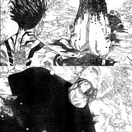

La pelea entre Gojo Satoru y Ryomen Sukuna en Jujutsu Kaisen
La pelea entre Gojo Satoru y Ryomen Sukuna es uno de los momentos más esperados y emocionantes en el mundo de Jujutsu Kaisen.
Es como si dos gigantescos titanes chocaran en un campo de batalla, cada uno con un arsenal de poderes y habilidades que desafían la imaginación.
Donde se juegan el futuro del mundo de la echiceria.

¿Por qué es tan importante esta pelea?
Choque de titanes: Gojo y Sukuna son considerados los personajes más poderosos del universo de Jujutsu Kaisen...
- Sus técnicas y habilidades son incomparables, lo que hace que su enfrentamiento sea un espectáculo visual y lleno de acción.
- El resultado de esta batalla podría determinar el futuro del mundo de Jujutsu Kaisen...
- Durante la pelea, tanto Gojo como Sukuna revelan nuevas y poderosas técnicas...
Choque de Titanes:
El duelo de los más fuertes: Gojo y Sukuna son como los campeones de dos mundos diferentes: uno, el de los hechiceros, donde Gojo destaca por su inmenso poder y habilidades innatas; y el otro, el de las maldiciones, donde Sukuna reina como el rey.
Un espectáculo visual y de habilidades:
Imagínate una pelea donde cada golpe, cada movimiento, cada uso de una técnica especial es como una obra de arte en movimiento. Sus habilidades son tan poderosas que deforman el entorno y desafían las leyes de la física. Es un festín para los ojos y una delicia para los amantes de las peleas épicas.
Un contraste de personalidades:
Gojo es conocido por su personalidad relajada y confiada, mientras que Sukuna es calculador y despiadado. Este contraste de personalidades hace que la pelea sea aún más interesante, ya que vemos cómo dos formas de pensar tan diferentes se enfrentan.
El futuro del mundo de Jujutsu Kaisen:
Un punto de inflexión: El resultado de esta batalla marcará un antes y un después en el mundo de Jujutsu Kaisen. Si gana Gojo, la humanidad tendrá una oportunidad de respirar y recuperarse. Si gana Sukuna, el caos y la destrucción se extenderán por todo el mundo.
El equilibrio de poder: Esta pelea determinará quién tiene el control sobre el mundo de Jujutsu Kaisen: ¿serán los hechiceros, liderados por Gojo, o las maldiciones, con Sukuna a la cabeza?
El destino de los personajes: El resultado de la batalla tendrá un impacto directo en la vida de todos los personajes. Algunos perderán a seres queridos, otros encontrarán un nuevo propósito, y algunos incluso podrían cambiar su forma de ver el mundo.
Nuevas técnicas y habilidades:
La evolución de los personajes: A medida que la pelea avanza, tanto Gojo como Sukuna descubren nuevas formas de utilizar sus poderes. Es como si estuvieran aprendiendo y creciendo a medida que luchan, lo que hace que cada momento de la batalla sea impredecible.
Un despliegue de creatividad: Los autores de Jujutsu Kaisen han creado un universo lleno de posibilidades, y esta pelea es el escenario perfecto para mostrar la creatividad de los personajes al máximo. Ver cómo Gojo y Sukuna inventan nuevas técnicas sobre la marcha es una de las cosas más emocionantes de la serie.
Un espectáculo visual impresionante: Cada nueva técnica que se revela viene acompañada de efectos visuales espectaculares. Es como si estuviéramos viendo una película de acción de alta calidad, pero con personajes y poderes sobrenaturales.
¿Qué sucede en la pelea?
Una mezcla explosiva de habilidades:
- Estrategias inteligentes: Ambos personajes son maestros en la planificación y la adaptación. Gojo, con su mente brillante, anticipa los movimientos de Sukuna y crea barreras y trampas para atraparlo. Por su parte, Sukuna utiliza su experiencia y conocimiento de la maldición para encontrar las debilidades de Gojo y atacar en el momento preciso.
- Poder bruto y desatado: Pero no todo es estrategia. Cuando la situación lo requiere, ambos personajes desatan todo su poder en ataques devastadores que hacen temblar el suelo. Es una exhibición de fuerza bruta que te dejará sin aliento.
- Momentos de tensión que te pondrán los pelos de punta: Cada intercambio de golpes, cada nuevo poder revelado y cada giro inesperado en la batalla te mantendrán al borde de tu asiento. ¿Quién ganará? ¿Cuál será el siguiente movimiento? Estas preguntas te mantendrán en vilo durante toda la pelea.
Un baile mortal de poderes:
Imagina una coreografía de destrucción donde cada movimiento es un golpe certero, cada salto es una evasión milagrosa y cada técnica especial es una explosión de energía. Así es la pelea entre Gojo y Sukuna, un espectáculo visual y lleno de acción que te hará sentir como si estuvieras en medio de la batalla.
Un juego de ajedrez a vida o muerte:
Más allá de la fuerza bruta, la pelea es también un juego de ajedrez. Ambos personajes intentan anticipar los movimientos del otro y encontrar la jugada perfecta para ganar. Es una batalla de mentes tan emocionante como la batalla física.
¿Quién gana?
¡Esa es la gran pregunta! La pelea entre Gojo y Sukuna es tan intensa y llena de giros que el resultado te mantendrá al borde del asiento...
lamentablemente Satoru Gojo pierde pipipi
¿Dónde puedo ver o leer la pelea?
Puedes encontrar la pelea entre Gojo y Sukuna en:
- Manga: El manga de Jujutsu Kaisen está disponible en plataformas digitales como Manga Plus.
- Anime: La adaptación al anime de Jujutsu Kaisen está disponible en plataformas de streaming como Crunchyroll.